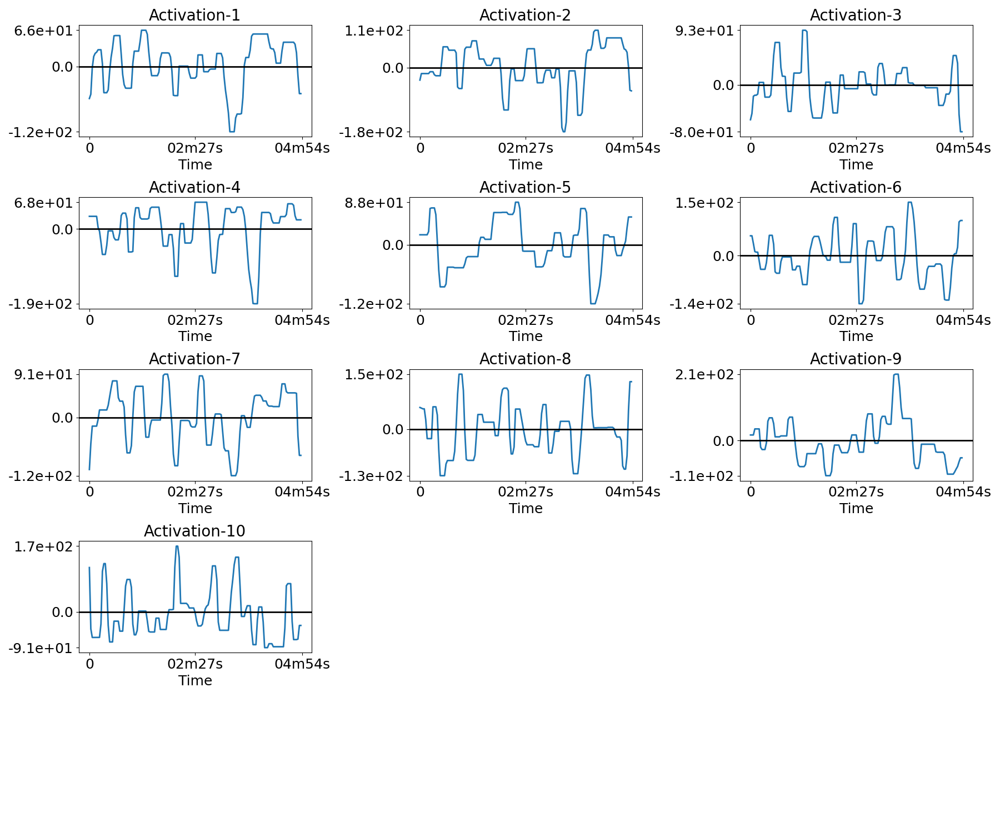
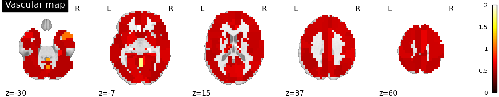

Note
Click here to download the full example code
Real fMRI data example¶
Example to recover the different neural temporal activities, the associated functional networks maps and the HRFs per ROIs in the fMRI data, on the ADHD dataset resting-state.
# Authors: Hamza Cherkaoui <hamza.cherkaoui@inria.fr>
# License: BSD (3-clause)
import os
import time
import numpy as np
from nilearn import datasets
from hemolearn import SLRDA
from hemolearn.utils import fmri_preprocess, sort_atoms_by_explained_variances
from hemolearn.plotting import (plotting_spatial_comp, plotting_temporal_comp,
plotting_hrf_stats)
plot_dir = 'plots'
if not os.path.exists(plot_dir):
os.makedirs(plot_dir)
TR = 2.0
adhd_dataset = datasets.fetch_adhd(n_subjects=1)
func_fname = adhd_dataset.func[0]
confound_fname = adhd_dataset.confounds[0]
X, _, _, _ = fmri_preprocess(func_fname, smoothing_fwhm=6.0, standardize=True,
detrend=True, low_pass=0.1, high_pass=0.01, t_r=TR,
memory='__cache__', verbose=0,
confounds=confound_fname)
seed = np.random.randint(0, 1000)
print(f'Seed used = {seed}')
Out:
/home/hcherkaoui/.local/lib/python3.6/site-packages/nilearn/datasets/func.py:439: VisibleDeprecationWarning: Reading unicode strings without specifying the encoding argument is deprecated. Set the encoding, use None for the system default.
dtype=None)
Seed used = 410
slrda = SLRDA(n_atoms=10, t_r=TR, n_times_atom=20,
hrf_model='scaled_hrf', lbda=0.9, max_iter=50,
eps=1.0e-3, deactivate_v_learning=False,
prox_u='l1-positive-simplex', raise_on_increase=True,
random_state=seed, n_jobs=1, cache_dir='__cache__',
nb_fit_try=1, verbose=0)
t0 = time.time()
slrda.fit(X)
delta_t = time.strftime("%H h %M min %S s", time.gmtime(time.time() - t0))
print("Fitting done in {}".format(delta_t))
Out:
WARNING:root:[MemorizedFunc(func=<function multi_runs_learn_u_z_v_multi at 0x7f3d972f50d0>, location=__cache__/joblib)]: Clearing function cache identified by hemolearn/learn_u_z_v_multi/multi_runs_learn_u_z_v_multi
________________________________________________________________________________
[Memory] Calling hemolearn.learn_u_z_v_multi.multi_runs_learn_u_z_v_multi...
multi_runs_learn_u_z_v_multi(X=array([[ 0.256382, ..., 0.233928],
...,
[-0.432341, ..., -0.148574]], dtype=float32), t_r=2.0, hrf_rois={ 1: array([ 719, ..., 4073]),
2: array([4443, ..., 7724]),
3: array([1265, ..., 2342]),
4: array([5924, ..., 6980]),
5: array([2292, ..., 4042]),
6: array([4330, ..., 5908]),
7: array([ 689, ..., 2648]),
8: array([5655, ..., 7711]),
9: array([ 703, 704, 705, 706, 707, 708, 711, 712, 713, 714, 715,
716, 717, 721, 722, 723, 724, 1025, 1026, 1027, 1028, 1034,
1035, 1036, 1037, 1038, 1047, 1048, 1049, 1050, 1376, 1384]),
10: array([7025, 7033, 7368, 7369, 7370, 7371, 7377, 7378, 7379, 7380, 7381,
7390, 7391, 7392, 7393, 7696, 7697, 7698, 7699, 7700, 7701, 7704,
7705, 7706, 7707, 7708, 7709, 7710, 7714, 7715, 7716, 7717]),
11: array..., hrf_model='scaled_hrf', deactivate_v_learning=False, deactivate_z_learning=False, n_atoms=10, n_times_atom=20, prox_z='tv', lbda_strategy='ratio', lbda=0.9, rho=2.0, delta_init=1.0, u_init_type='ica', z_init=None, prox_u='l1-positive-simplex', max_iter=50, get_obj=1, get_time=1, random_seed=410, early_stopping=True, eps=0.001, raise_on_increase=True, verbose=0, n_jobs=1, nb_fit_try=1)
____________________________________multi_runs_learn_u_z_v_multi - 90.3s, 1.5min
Fitting done in 00 h 01 min 30 s
plotting_spatial_comp(u_hat, variances, slrda.masker_,
plot_dir=plot_dir, perc_voxels_to_retain=0.1,
fname='u.png', verbose=True)

- 


- 


Out:
Saving plot under 'plots/u.png'

Out:
Saving plot under 'plots/z.png'
plotting_hrf_stats(v=v_hat, t_r=TR, masker=slrda.masker_, hrf_ref=None,
stat_type='fwhm', plot_dir=plot_dir, fname='v_fwhm.png',
verbose=True)

Out:
Saving plot under 'plots/v_fwhm.png'
Total running time of the script: ( 1 minutes 45.535 seconds)